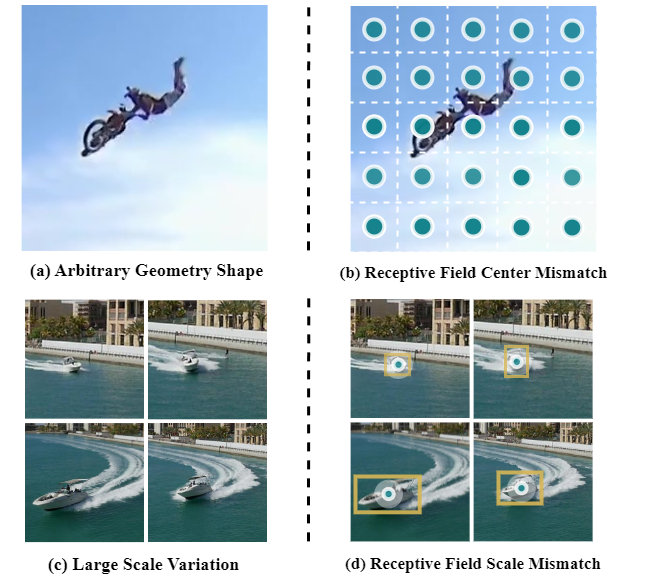
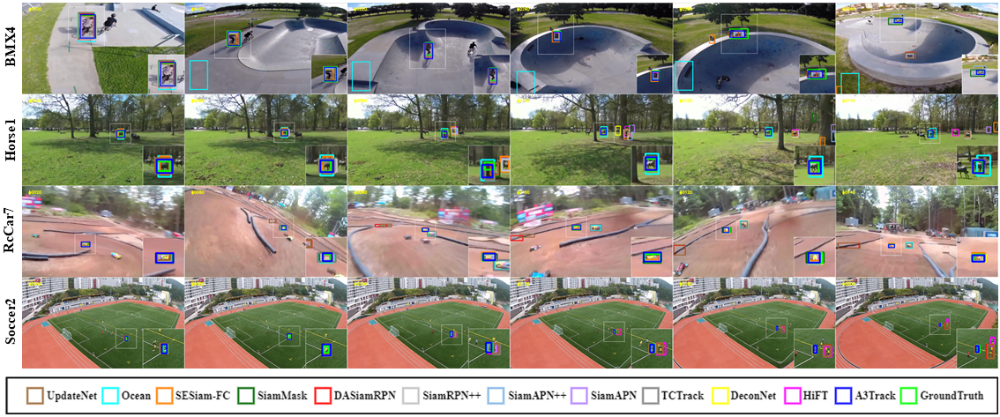
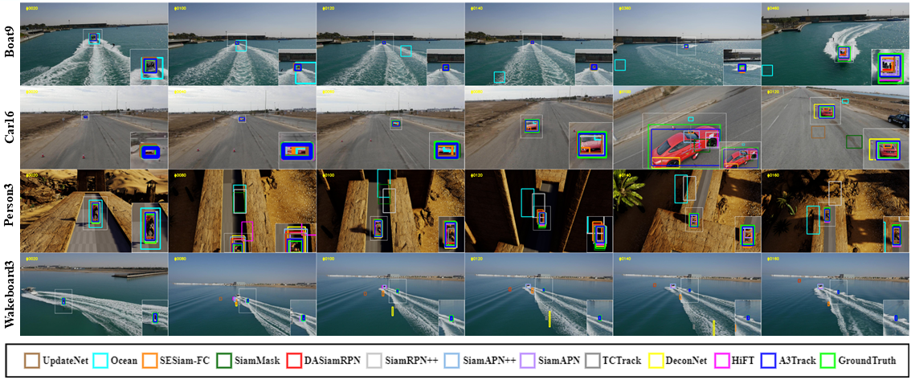

A3Track: Achieving Precise Target Tracking in Aerial Images with Receptive Field Alignment
Lei Xu,
Chang Xu,
Wensheng Cheng,
Wen Yang,
Gui-Song Xia,
School of Electronic Information, Wuhan University, Wuhan, China
Department of Computer Science, Stony Brook University, NY 11794, United States
School of Computer Science and the State Key Lab. LIESMARS, Wuhan University, Wuhan, China
[Paper]
[Data and Code]
Abstract
Tracking arbitrary objects in aerial images presents formidable challenges to existing trackers. Among these challenges, the large scale variation and arbitrary geometry shape of visual targets are pronounced, resulting in two-fold mismatch issues between the feature receptive field and the tracking target.
For one, there is a mismatch between the prior receptive field center and arbitrary-shaped targets. For another, the single receptive field mismatches the significantly scale-varied targets in the aerial imagery. To handle these challenges, we propose to Achieve precise Aerial tracking with receptive field Alignment, dubbed A3Track. The proposed A3Track is comprised of two modules: a Receptive Field Alignment (RFA) module and a Pyramid Receptive Field (PRF) module. First of all, we transform and update the receptive field center progressively, which drives the feature sampling location onto the targets' main body, thus gradually yielding precise feature representation for arbitrary-shaped targets. We term this progressively updating process as the Receptive Field Alignment. Moreover, the PRF module constructs a set of pyramid features for the target, providing a multi-scale receptive field to handle the large scale variation of tracking objects. On four benchmarks, the new tracker A3Track achieves leading performance compared with existing methods and shows consistent improvements over baselines.
Introduction
Aerial tracking, as a pioneering technique of automated air-to-ground monitoring, has aroused great interest in the remote sensing community. It plays a vital role in low-altitude remote sensing, as it helps to monitor targets from multi-height and multi-resolution remote sensing imagery. Accurately estimating the bounding box of targets remains a significant challenge for aerial trackers. Specifically, in aerial imagery, targets usually exhibit arbitrary shapes and significant variations in scale due to the diverse imaging distances, angles, and movement. In this case, there exist mismatch issues between the prior receptive field and targets, which can be examined from two different perspectives: Receptive field center mismatch and Receptive field scale mismatch. From one perspective, targets tend to have arbitrary shapes in the aerial imagery, which can lead to significant mismatches between the prior receptive field center and the target's main body. As shown in Figure 1, the green point denotes the location of the prior location of the receptive field center. This mismatch issue stems from the hand-crafted prior location, where the predefined priors along with their receptive field centers are uniformly distributed across the image. It leads to the fact that the receptive field center cannot well match the arbitrary shape of the target, the prior locations of receptive field centers deviate from the main body of the target. The mismatch between the receptive field center and the real target can introduce substantial bias during network training and reasoning, ultimately causing the tracking performance to deteriorate. From another perspective, targets' scales vary significantly in the aerial image, resulting in a mismatch problem between the feature receptive field and the scale of the targets. As illustrated in Figure 1, the single receptive field yields sub-optimal results in handling large scale variations of the target since the heuristic single receptive field and the scale-varied targets tend to be mismatched. Making the feature receptive field too large or too small is neither the best choice for accurate feature representation. The former will introduce much redundant information that interferes with the prediction while the latter will make the feature constrained to a specific part of the whole object.

Figure 1. Challenges of target estimation and underlying mismatch problems in aerial tracking. The left column outlines the challenges, while the right column identifies the corresponding underlying problems. The first row displays the prior location of the receptive field, and the second row depicts the coverage of the receptive field.
|
|
In summary, the contributions of this paper are listed as follows:
- We propose a Receptive Field Alignment (RFA) module to tackle the arbitrary target shape and significant shape deformation challenges in aerial tracking. In the RFA, the prior and corresponding receptive field centers are recurrently and progressively updated, which can align the receptive field center to the targets' main body, alleviating the receptive field center mismatch problem.
- We propose a Pyramid Receptive Field (PRF) module to handle the large scale variations in aerial images. The PRF works with the RFA and generates a multi-receptive field anchor field, making the aerial tracker robust to scale variation, and alleviating the receptive field scale mismatch problem.
-
Experiments on four aerial tracking datasets indicate that our A3Track outperforms existing aerial trackers and achieves leading performance.
|
Experimental Results
|
A Comparison of Different Methods on DTB70
|

Figure 2. Qualitative comparison on the DTB70 dataset. From the top to bottom are the tracking results on the BMX4, Horse1, RcCar7, and Soccer2 sequences of the DTB70 datasets. The target regions are enlarged in the bottom right, while the green squares denote the ground truth.
|
A Comparison of Different Methods on UAV123@10fps
|

Figure 3. Qualitative comparison on the UAV123@10fps dataset. From the top to bottom are the tracking results on the Boat9, Car16, Person3, and Wakeboard3 sequences of the UAV123@10fps dataset.The target regions are enlarged in the bottom right, while the green squares denote the ground truth.
|
Citation
-
<
@article{a3track,
title={A3Track: Achieving Precise Target Tracking in Aerial Images with Receptive Field Alignment},
author={Xu, Lei and Xu, Chang, Wensheng Cheng, Yang, Wen and Xia, Gui-Song},
journal={},
volume={},
pages={},
year={},
publisher={}
}
>
|